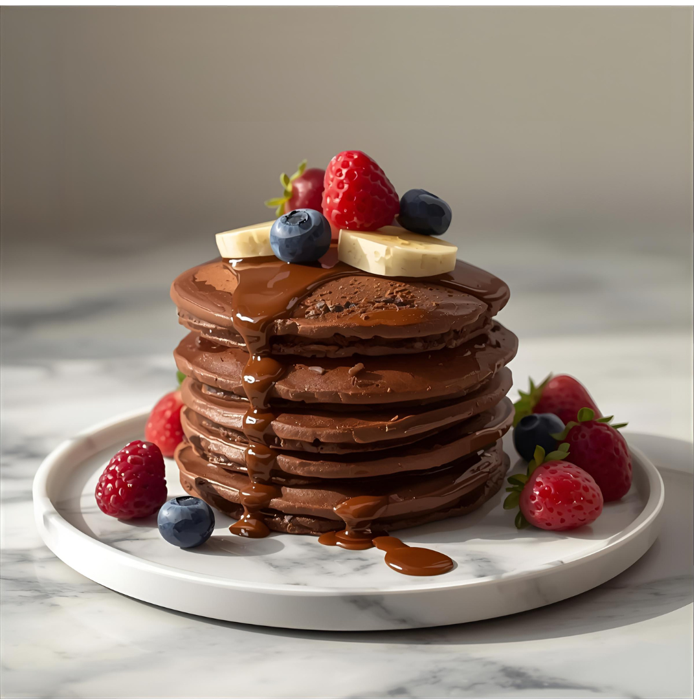

Home
Banana Chocolate Pancakes

- Makes 4 pancakes
- Preparation time: 10 minutes
- Ready in 15 minutes
Ingredients
- 180g egg whites
- 220g ripe banana
- 33g (1 scoop) chocolate protein powder
- 65g rolled oats
- 15g (3 tbsp) cocoa powder
- 1 tsp cinnamon
- Cooking spray
Top With
- 60ml (4 tbsp) low-calorie syrup (20 calories)
Steps
- Place rolled oats into a blender, and blend on high until the oats
are powdery.
- Add the remaining dry ingredients (protein powder, cinnamon,
and cocoa powder) to the blender, and pulse until well-mixed.
- Add the liquid ingredients to the blender, and blend on medium
until the batter is smooth.
- Heat a skillet over medium-high heat. Spray the pan with cooking
spray, and add the batter to the pan to form a pancake.
- Allow to cook on one side for 2-4 minutes or until the edges start
to appear cooked, and then flip.
- Remove from the pan and serve. Repeat until you’ve cooked as
many pancakes as you want. (You may also store the extra batter
and cook it later, or cook the extra pancakes now, and refrigerate
until you are ready to eat them.)